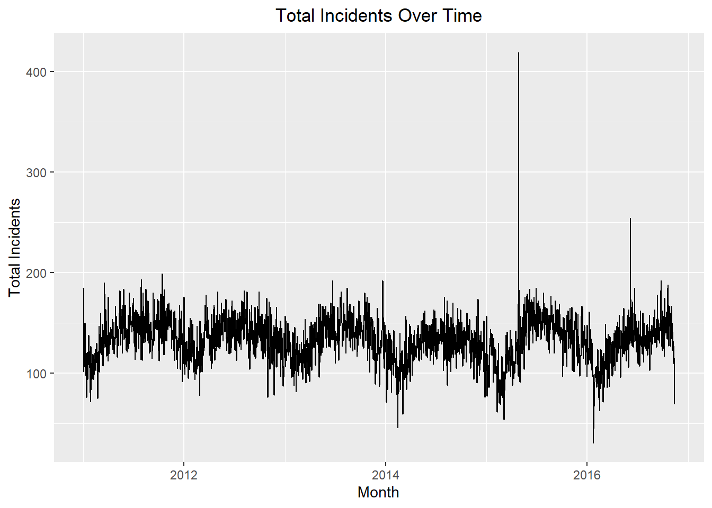
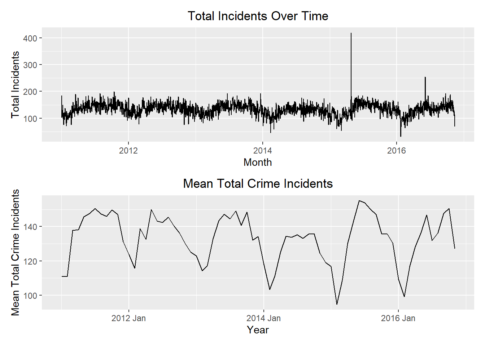

library(dplyr)
library(tidyr)
library(ggplot2)
library(tidyverse)
library(dygraphs)
library(tidyquant)
library(forecast)
if (!require("pacman")) install.packages("pacman")
pacman::p_load("tsibble", "fable",
"feasts", "tsibbledata",
"fable.prophet", "tidyverse",
"patchwork", "rio")Additive and Multiplicative Models
Chapter 1: Lesson 3
Learning Outcomes
- Define moving average of a time series
- Estimate the trend component using moving averages
Plot time series data to visualize trends, seasonal patterns, and potential outliers
- Plot the estimated trend of a time series using a moving average
Preparation
- Read Sections 1.1-1.4 and 1.5.1-1.5.3
Learning Journal Exchange (15 min)
- Review another student’s journal
- What would you add to your learning journal after reading your partner’s?
- What would you recommend your partner add to their learning journal?
- Sign the Learning Journal review sheet for your peer
STARTING HERE
City of Baltimore Crime Data (2011-2016) Summary
Overview
- Dataset Size: 286,000 rows
- Columns: 12
Key Information
- Date and Time: Records the date and time of each incident.
- Location: Detailed coordinates of each incident.
- Crime Type: Description of the type of crime.
Source
This dataset is sourced from the City of Baltimore Open Data and is updated monthly.
Data Access
Explore the data on data.world.
Packages
Data Import
df <- read.csv("https://query.data.world/s/gibquqj7violcatsd74xyyg7r4fwxp?dws=00000", header=TRUE, stringsAsFactors=FALSE)Data Summary and Aggregation
# Group by CrimeDate column and summarize from Total.Incidents column
summary_df <- df %>%
group_by(CrimeDate) %>%
summarise(
total_incidents = sum(Total.Incidents),
average_incidents = mean(Total.Incidents),
max_incidents = max(Total.Incidents),
min_incidents = min(Total.Incidents)
)Data Transformation and Formatting
# Select relevant columns, format CrimeDate, and arrange the data
crime_data <- summary_df %>%
select(CrimeDate, total_incidents) %>%
mutate(CrimeDate = as.Date(CrimeDate, format = "%m/%d/%Y")) %>%
arrange(CrimeDate)
# Uncomment the line below to see the formatted table
# crim_dataCreate Time Series Data
# Convert formatted data to tsibble with CrimeDate as the index
crime_tsibble <- as_tsibble(crime_data, index = CrimeDate)
# Uncomment the line below to see the tsibble
# crime_tsibbleMonthly Plot of Total Incidents
# Create a monthly plot of total incidents over time
crime_plot <- autoplot(crime_tsibble, .vars = total_incidents) +
labs(
x = "Month",
y = "Total Incidents",
title = "Total Incidents Over Time"
) +
theme(plot.title = element_text(hjust = 0.5))
# Display the plot
crime_plot
Calculate Mean Annual Total Incidents
# Calculate mean annual total incidents
crime_annual_ts <- crime_tsibble %>%
index_by(year = year(CrimeDate)) %>%
summarise(value = mean(total_incidents))
# Uncomment the line below to see the table
# crime_annual_tsConvert to Time Series and Plot Mean Annual Total Incidents
# Convert to ts object
crime_annual_ts_ts <- ts(crime_annual_ts$value, frequency = 1)
# Plot mean annual total incidents using autoplot
autoplot(crime_annual_ts_ts) +
labs(
x = "Year",
y = "Mean Total Incidents",
title = "Mean Annual Total Incidents"
) +
theme_minimal()
Monthly Boxplots of Total Incidents
# Add a categorical month variable to the tsibble
crime_tsibble <- crime_tsibble %>%
mutate(month = factor(month(CrimeDate)))
# Create boxplots
ggplot(crime_tsibble, aes(x = month, y = total_incidents)) +
geom_boxplot() +
labs(
x = "Month",
y = "Total Incidents",
title = "Boxplots of Total Incidents by Month"
) +
theme(plot.title = element_text(hjust = 0.5))
Estimating the Trend: Moving Average (5 min)
# Assuming 'crime_tsibble' is your tsibble
crime_tsibble <- crime_tsibble %>%
mutate(year = year(CrimeDate)) # Extract year from CrimeDate
# Create a daily plot
dp <- autoplot(crime_tsibble, .vars = total_incidents) +
labs(
x = "Month",
y = "Total Incidents",
title = "Total Incidents Over Time"
) +
theme(plot.title = element_text(hjust = 0.5))
# Calculate mean monthly total incidents
mean_monthly_incidents <- crime_tsibble %>%
as.data.frame() |>
group_by(year, month) |>
summarize(value = mean(total_incidents)) |>
mutate(index = tsibble::yearmonth( mdy(paste0(month, "/15/", year)) )) |>
as_tsibble(index = index)`summarise()` has grouped output by 'year'. You can override using the
`.groups` argument. # Calculate mean annual total incidents
mean_annual_incidents <- crime_tsibble %>%
as.data.frame() |>
group_by(year) |>
summarize(value = mean(total_incidents)) |>
mutate(index = tsibble::yearmonth( mdy(paste0("7/1/",year)) )) |>
as_tsibble(index = index)# Create a yearly plot
yp <- ggplot(mean_annual_incidents, aes(x = year, y = value)) +
geom_line() +
labs(
x = "Year",
y = "Mean Total Crime Incidents",
title = "Mean Total Crime Incidents"
) +
scale_x_continuous(breaks = seq(2004, max(crime_tsibble$year), by = 2)) +
theme(plot.title = element_text(hjust = 0.5))
# Create a monthly plot
mp <- ggplot(mean_monthly_incidents, aes(x = index, y = value)) +
geom_line() +
labs(
x = "Year",
y = "Mean Total Crime Incidents",
title = "Mean Total Crime Incidents"
) +
# scale_x_continuous(breaks = seq(2004, max(crime_tsibble$year), by = 2)) +
theme(plot.title = element_text(hjust = 0.5))
# Display both simultaneously
dp / mp
dp / yp
–> –>
–>
–>
–>